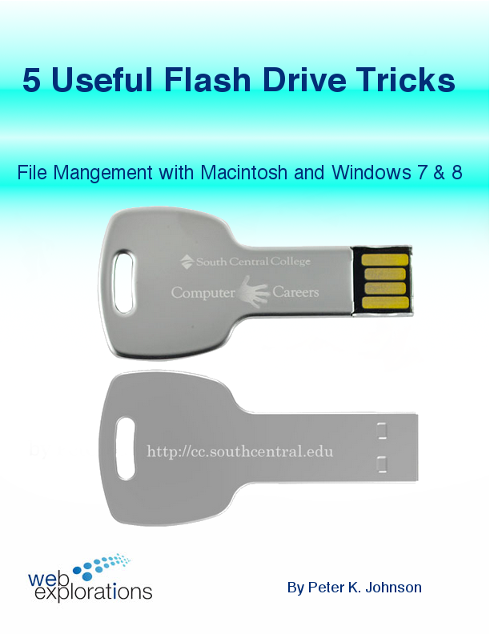
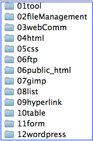

|
File Management |
Keeping track of things on your computer |

Learn how to:
- Setup files and folders
- Name files to make your web life easier
- Use file extensions
- Organize files using move and copy
- Use the hotkeys used by professionals
- Zip files together (and unzip them later)
WII-FM (What's In It - For Me)
File management may sound intimidating but you'll find out that it is really very simple and will help you get control of your computer. No longer will you wonder, "Where did that file go?"
Complete these Learning Activities:
Total estimated time for this module: 2 hours.

You will learn how to:
- How to remove a flash drive without losing data
- How to make new folders
- How to make shortcut or alias icons.
- Different ways to view your files and folders
- How to reveal hidden file extensions
Estimated Time: 30 minutes.
Work through this tutorial: 5 Flash Drive Tricks.

Use these folders each week to hold the code examples for that topic.
Notice the 06public_html folder. That will be where you will store your finished web site files before you publish it out on the Web.
Estimated Time: 10 minutes.
Set up folders on your flash drive to keep track of the files in this course.
 Work through this Tutorial: File Management with Dogs and Cats showing how to organize files and how the path statement works with web pages. No knowledge of HTML necessary!
Work through this Tutorial: File Management with Dogs and Cats showing how to organize files and how the path statement works with web pages. No knowledge of HTML necessary!
There are several short videos embedded inside this tutorial.
Here is the catDog.zip file that you can download to your flash drive.
This is a hands-on tutorial. You should save all your files inside the 02FileManagement folder that you set up in the previous activity. (You will need to show these files and folders as part of the Assessment at the end of this module.)
Here is a summary of the steps you will follow:
- Create the set of folders for this class on your flash drive (01tool, 02fileManagement, 03webComm, 04html, etc.) as shown in the previous learning activity.
- Download the catDog.zip file to the 02fileManagement folder.
- Unzip the zip file into its own folder (see the tutorial to learn how to unzip)
- In the 02fileManagement folder create the rootDirectory folder with all its subfolders. See the tutorial for the names of the folders.
- Copy the indexSTART.html file from the unzipped catDog folder into the rootDirectory folder.
- Open the indexSTART.html file in a browser. Open your favorite browser and use CTRL O (Open)
- Copy the images from the catDog folder into the appropriate folder in rootDirectory. Each time you copy an image refresh the browser (CTRL r) to see if the image appears.
- Notice that the path images are different than the rest of the images. They should all go in the rootDirectory, not inside any other subfolders.
- When you are all finished you should be able see all the images on the web page.
Estimated Time: 30 minutes.
Work through this Tutorial: File Management with Dogs and Cats.
Take the Self-Quiz: File Management. You can find the quiz in D2L by selecting Assessements/Quizzes.
The self-quizzes are learning activities. They are there to help you learn the material. Normally there is a database of about 100 questions. Each time you take the self-quiz you will get 10 questions at random from this database. If you take the self-quiz 10 times then you should pretty much see all of the questions.
- You can take this quiz as many times as you like.
- Each time you take a self-graded quiz you will get 10 questions as well as get immediate results when you are finished.
- The same question bank is used for the graded quiz.
- Questions are presented in random order. Answers are shown in random order.
- Self-quizzes are available for a whole week and close at 11:55pm on Sunday.
- The graded quiz will open the following Monday. (This helps you assess your actual knowledge as opposed to your short-term memory.)
- Be smart and take the self-quiz once each day to learn the material.
Estimated Time: 10 minutes (probably a lot less) each time you take a self-quiz.
Take the Self-Quiz: fileManagement.
Naming Conventions - You will find that naming files and folders in a consistent manner will greatly reduce mistakes.
Here are the naming conventions that you should follow in this course:
- Always start with a lower case letter. (UPPER/lower case matter out on the web server).
- No spaces and no underlines "_". (The Web hates spaces and changes them to %20 - Underlines look like spaces when name is included as part of a link)
- useCamelCaseForReadability. Capitalize the first letter of each word. (Readability is important. This trick replaces the spaces you can't use.)
- Don't use plurals. (This will keep you from saying to yourself, "Was it graphics or graphic?" and then having to spend the time to look it up.)
- File extensions should be lower case. (Many graphic programs automatically make file extensions all caps. Keep your names consistent. Remember that UPPER/lower case always matter.)
Consistently following these rules will greatly reduce frustrations as you build your web pages.
Even after you have finished this course you will find it useful to name all your files this way on your computer. This is especially true if you plan to be a programmer.
Follow the naming conventions for all your folders and filenames you create in this course.
Sign up for Screencast-O-Matic. Watch the introduction video on their homepage to see how to use this tool.
Create a test video to make sure you know how to use the recorder. Here is a video showing you how to use Screencast-O-Matic.
Don't have a microphone? You can purchase a lapel microphone from Amazon.com for less then $4.00
Having trouble with Java? Try using FireFox. It seems that Google Chrome and Oracle's Java are not talking to each other these days. It must have been something Java said or else Google Chrome is just being hyper-sensitive. Either way, FireFox is currently playing well with Java.
Estimated Time: 30 min.
Sign up for Screencast-O-Matic. Watch the introduction video on their homepage to see how to use this tool.
Your Graded Assignments For This Module:
 Stop!
Stop!
Don't frustrate yourself. Do the Learning Activities BEFORE starting these graded activities.
No sense jumping into the deep end of the pool if you haven't learned how to swim...
Project: File Management - Show the work you did with the file management labs
Here are the specs:
Using Screencast-O-Matic create a 1-minute video showing the work you did for the file management lab using the following script:
- Make sure you have D2L open and your portrait visible along the top edge of the video.
- Introduce yourself and describe in a single sentence what the video is for.
- Using File Explorer (or Finder on the Mac) show the file structure you have created for this class (folders named 01tool, 02fileManagement, etc.).
- Go into 02fileManagement and show the file structure starting with rootDirectory and working down to the subfolders pet and then cat and dog.
- Display the web page to show that you have all the photos in the correct folders.

Zip up the rootDirectory folder and submit it to the dropbox. It should be named rootDirectory.zip. (You have to submit a file in order to use the D2L dropbox.)
Copy the link to the video from ScreenCast-o-matic and put it in the notes section of the dropbox.
This will be worth 10 points. You will need to have both the zip file as well as a valid link to the video in order to receive full credit. No late submissions will be accepted.

Your Tip-Of-The-Week
(Click on the lightbulb to reveal the tip.)
Here are some tips to make your Windows 8 Experience a little nicer.
- Open from the lock screen
- Handle basic navigation
- Group Your Apps
- Use the Quick Access menu
- Find your applications
- Make access easier
- Shut down
What's Next?
How does the Web work? Move on to Module: Web Communications to find out.